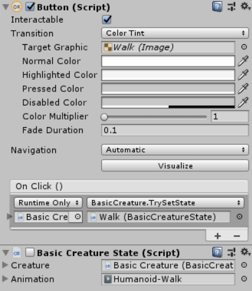
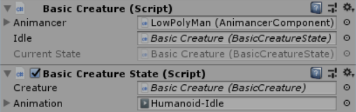

Location: Assets/Plugins/Animancer/Examples/06 State Machines/01 Creatures
Namespace:
Animancer.Examples.StateMachines.Creatures
A common mistake made by inexperienced developers is to write classes with names like Player and Enemy which end up having a significant amount of identical code. This is not always the case, but in a lot of games the enemies follow the same general structure and rules as the player: everything has a model (or sprite) that can be animated, they have a health pool, a state machine with the various actions they can perform, and so on. The main difference is the way they are controlled: the player character responds to input from a controller/keyboard/mouse/etc. while an enemy decides what to do using AI algorithms. In a multiplayer game, player characters might act according to messages sent across the network rather than local input. The point is that they all follow the same rules for how they can move, they simply differ in the mechanism used to decide which direction they will move.
This example demonstrates how you can organise the structure of a Creature and use Animancer's Finite State Machine system to divide the various actions it can perform into separate scripts known as states.
- The Interrupt Management example introduces some simple ways to determine which states are allowed to interrupt each other.
- The Brains example shows how you can properly control a creature and the More Brains example expands that idea further to show how creatures can be controlled differently while still sharing the majority of their code.

There are two scripts in this example:
Creature is the core of any character which holds references to their other components.
using Animancer;
using Animancer.FSM;
using System;
using UnityEngine;
public sealed class Creature : MonoBehaviour, IAnimancerClipSource
{
[SerializeField]
private AnimancerComponent _Animancer;
public AnimancerComponent Animancer { get { return _Animancer; } }
[SerializeField]
private CreatureState _Idle;
public CreatureState Idle { get { return _Idle; } }
public StateMachine<CreatureState> StateMachine { get; private set; }
public Action ForceIdleState { get; private set; }
private void Awake()
{
ForceIdleState = () => StateMachine.ForceSetState(_Idle);
StateMachine = new StateMachine<CreatureState>(_Idle);
}
public void TrySetState(CreatureState state)
{
StateMachine.TrySetState(state);
}
}
CreatureState is a very simple state that can be used by a Creature.
using Animancer;
using Animancer.FSM;
using UnityEngine;
public sealed class CreatureState : StateBehaviour<CreatureState>, IAnimancerClipSource
{
[SerializeField] private Creature _Creature;
[SerializeField] private AnimationClip _Animation;
private void OnEnable()
{
var state = _Creature.Animancer.CrossFade(_Animation);
if (!_Animation.isLooping)
state.OnEnd = _Creature.ForceEnterIdleState;
}
public AnimancerComponent Animancer { get { return _Creature.Animancer; } }
}
Creatures
The Creature component is the core of any character, whether it be a player, enemy, NPC, person, animal, monster, or robot. A different term may be more suitable depending on the type of game you are making - for example, a strategy game might use "Unit" while a space game might use "Ship" - but the idea is always the same: all of the game's characters share the same core script which holds references to each of its other components:
- The animation system (an
AnimancerComponentif you use Animancer, but otherwise it might just be anAnimator). - A state machine (this example uses Animancer's Finite State Machine system, but you can use any system you like).
- The default Idle state for other states to return to.
- Any other details such as a
Rigidbody, character attributes, health pool, and so on.
Anything that wants to access one or more of a creature's components can do so via the core Creature component. So rather than a Locomotion state having a reference to the AnimancerComponent (to play animations) and Rigidbody (to apply force) and CreatureStats (to determine how fast it can move), every state just references the Creature and accesses the parts it needs through that reference.
State Machine
This is the first example which demonstrates Animancer's Finite State Machine system.
First we make a read-only property (public get, private set) so anything can access it and try to change its state, but other scripts can't set it to null or assign a different state machine to it by accident.
public StateMachine<CreatureState> StateMachine { get; private set; }
Then we just initialise it with the desired default state on startup:
private void Awake()
{
StateMachine = new StateMachine<CreatureState>(_Idle);
}
Since we are using CreatureState as the TState generic parameter, this state machine will be able to use any instance of the CreatureState class or anything that inherits from it (though for this example we don't want anything to inherit from it so we made the class sealed).
Actions
Much like how Animancer itself allows animations to come from anywhere instead of needing them to all be defined upfront, this state machine system also allows states to come from anywhere. For this example, we want to control the state machine using UI buttons so we also need a TrySetState method for their UnityEvents to call (where other scripts would normally just call creature.StateMachine.TrySetState directly):
public void TrySetState(CreatureState state)
{
StateMachine.TrySetState(state);
}
This means that each state can be attached to the button that triggers it instead of making them all part of the creature.

The Brains example goes into more detail about controlling creature actions.
Returning to Idle
As was explained in the Fine Control/Spider Bot example, creating a new delegate for the AnimancerState.OnEnd callback creates garbage which is bad for performance. So rather than having every state create garbage every time they want to return to the idle state after an animation finishes, the core Creature class is a good place to cache that delegate.
public Action ForceIdleState { get; private set; }
private void Awake()
{
ForceIdleState = () => StateMachine.ForceSetState(_Idle);
}
The Interrupt Management example explains why we are using ForceSetState instead of TrySetState.
Current State Display
The Creature script also contains a method to display the current state in the Inspector if you have Inspector Gadgets Pro:
| Edit Mode | Play Mode |
 |
 |
Inspector Gadgets Pro adds a variety of enhancements to the Inspector for your scripts, one of which is the ability to write a method called AfterInspectorGUI which it will call after drawing the regular Inspector GUI of that script (or OnInspectorGUI if you want to replace the regular GUI entirely). We use this feature to draw the current state while in Play Mode, but if you don't have Inspector Gadgets Pro the method will simply never get called.
#if UNITY_EDITOR
private void AfterInspectorGUI()
{
if (UnityEditor.EditorApplication.isPlaying)
{
GUI.enabled = false;
UnityEditor.EditorGUILayout.ObjectField("Current State", StateMachine.CurrentState, typeof(CreatureState), true);
}
}
#endif
Note that the #if UNITY_EDITOR isn't always necessary to use AfterInspectorGUI, but in this case we need it because we are using classes in the UnityEditor namespace which don't exist in runtime builds.
States
Normally the base CreatureState would be an abstract class which defines common logic for all states to inherit when they implement their behaviour, but for this example all we want each state to do is play an animation so we use this one script for all of them.
The purpose of inheriting from StateBehaviour is described on the Finite State Machine page. Basically, it gives our states basic functionality as components which are disabled by default and only get enabled when the state is entered. It doesn't really achieve anything useful in this example since the states don't do anything more than play an animation on entry, but in more complex systems this makes it easier to implement states that need Update or FixedUpdate methods to be called while that particular state is the current one.
The purpose of implementing IAnimancerClipSource (and the public AnimancerComponent Animancer property) is explained in its API documentation page.
Walk and Run
The base CreatureState class would normally not even have an _Animation field because some states might have no animation or even multiple animations. For example, Walk and Run might both be handled by a single Locomotion state which has references to both animations so that it can synchronise their walk cycles as described in the Locomotion/Walk and Run example. Such a state would simply choose which animation to play depending on whether the creature's Brain says it should be running.
The Brains example expands this system by implementing different ways of controlling creatures.